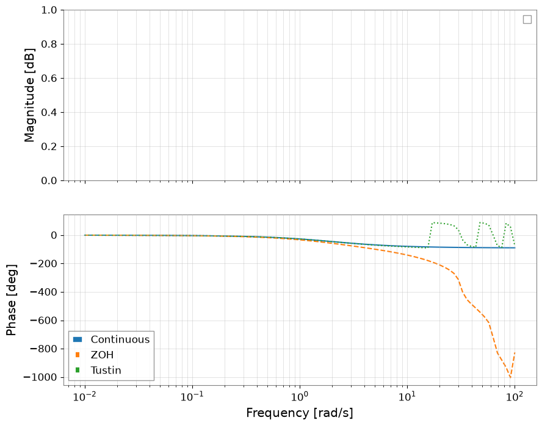
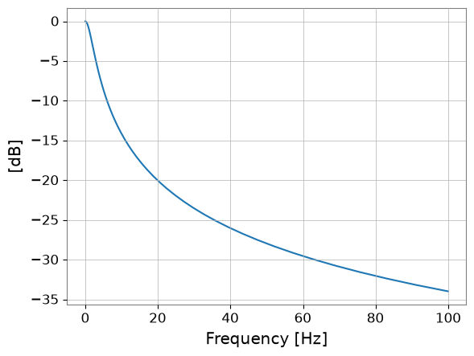
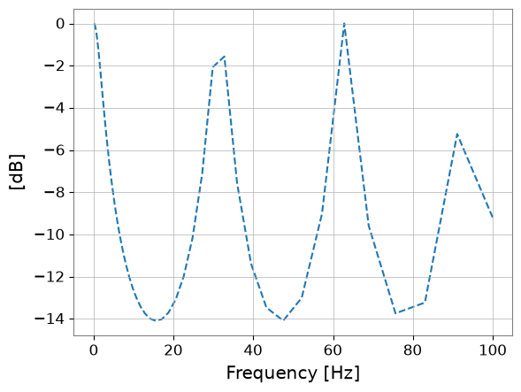
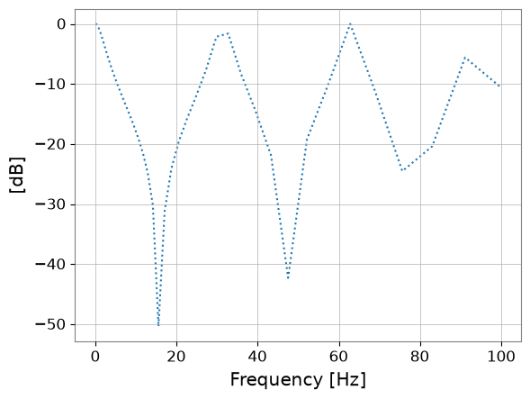
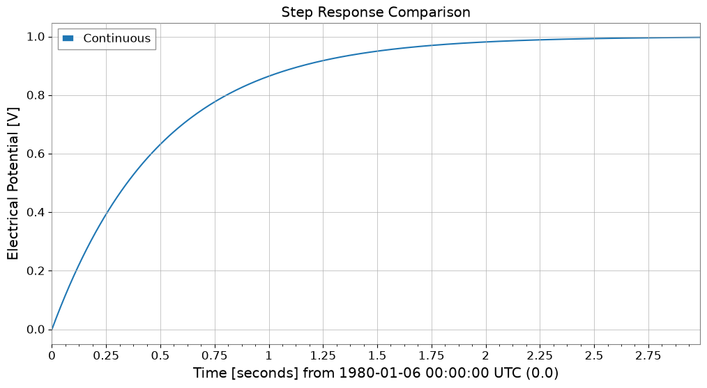
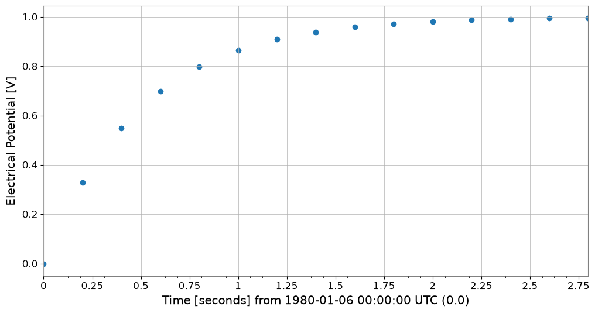
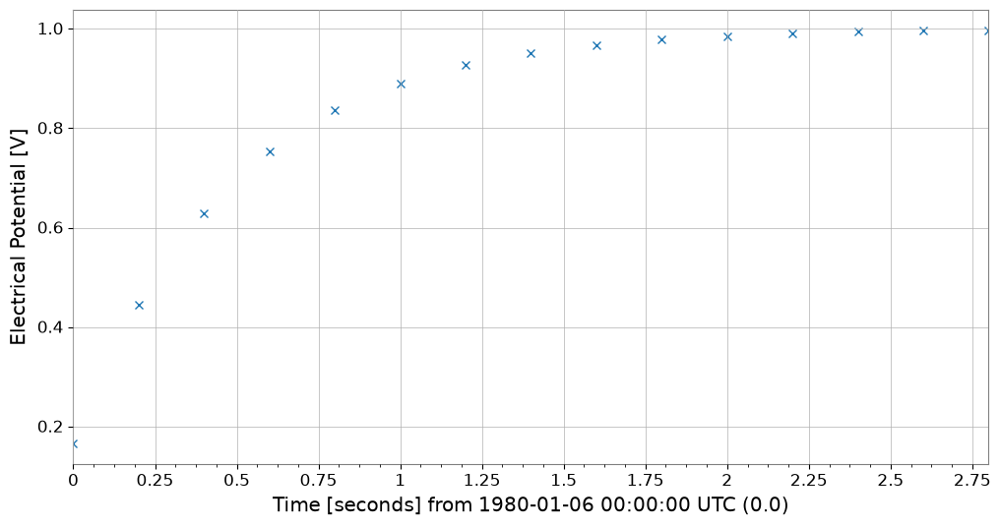

Note
This page was generated from a Jupyter Notebook. Download the notebook (.ipynb)
[1]:
# Skipped in CI: Colab/bootstrap dependency install cell.
Control Analysis: Discretization Basics

This notebook promotes the legacy control-theory example into the public docs set. The point is not just to call c2d(): it is to show how a continuous plant changes when a digital controller samples and holds actuator commands.
We compare Zero-Order Hold (ZOH) and Tustin because they preserve different physical aspects of the loop. ZOH is faithful to DAC-held commands in time-domain actuation, while Tustin tends to preserve frequency response near crossover more evenly.
[2]:
import matplotlib.pyplot as plt
import numpy as np
from control.matlab import bode, c2d, step, tf
from gwexpy import FrequencySeries, TimeSeries
# Use a simple first-order plant so the discretization trade-off is easy to interpret physically.
P = tf([0, 1], [0.5, 1])
print(P)
<TransferFunction>: sys[0]
Inputs (1): ['u[0]']
Outputs (1): ['y[0]']
1
---------
0.5 s + 1
1. Discretize the plant
Sampling does two things at once: it freezes actuator commands between updates and it warps the frequency axis seen by the digital filter. Those are different physical approximations, so we keep both versions.
[3]:
ts = 0.2 # Sampling time [s]
# ZOH assumes the DAC holds each command constant until the next sample, which is often the right actuator model.
Pd_zoh = c2d(P, ts, method="zoh")
# Tustin maps the continuous pole/zero structure through a bilinear transform, which usually preserves loop-shape better near crossover.
Pd_tustin = c2d(P, ts, method="tustin")
print("ZOH:")
print(Pd_zoh)
print("Tustin:")
print(Pd_tustin)
ZOH:
<TransferFunction>: sys[0]$sampled
Inputs (1): ['u[0]']
Outputs (1): ['y[0]']
dt = 0.2
0.3297
----------
z - 0.6703
Tustin:
<TransferFunction>: sys[0]$sampled
Inputs (1): ['u[0]']
Outputs (1): ['y[0]']
dt = 0.2
0.1667 z + 0.1667
-----------------
z - 0.6667
2. Compare frequency response
The physically important question is where phase and gain begin to drift away from the continuous plant. Excess phase error near the intended unity-gain region directly changes stability margin.
[4]:
omega = np.logspace(-2, 2, 100)
mag_c, phase_c, w_c = bode(P, omega, plot=False)
mag_z, phase_z, w_z = bode(Pd_zoh, omega, plot=False)
mag_t, phase_t, w_t = bode(Pd_tustin, omega, plot=False)
fs_mag_c = FrequencySeries(20 * np.log10(mag_c), frequencies=w_c, unit="dB", name="Continuous")
fs_mag_z = FrequencySeries(20 * np.log10(mag_z), frequencies=w_z, unit="dB", name="ZOH")
fs_mag_t = FrequencySeries(20 * np.log10(mag_t), frequencies=w_t, unit="dB", name="Tustin")
fig, (ax1, ax2) = plt.subplots(2, 1, figsize=(10, 8), sharex=True)
fs_mag_c.plot(ax=ax1, label="Continuous")
fs_mag_z.plot(ax=ax1, label="ZOH", linestyle="--")
fs_mag_t.plot(ax=ax1, label="Tustin", linestyle=":")
ax1.set_xscale("log")
ax1.set_ylabel("Magnitude [dB]")
ax1.legend()
ax1.grid(which="both", alpha=0.5)
ax2.semilogx(w_c, np.rad2deg(phase_c), label="Continuous")
ax2.semilogx(w_z, np.rad2deg(phase_z), label="ZOH", linestyle="--")
ax2.semilogx(w_t, np.rad2deg(phase_t), label="Tustin", linestyle=":")
ax2.set_ylabel("Phase [deg]")
ax2.set_xlabel("Frequency [rad/s]")
ax2.legend()
ax2.grid(which="both", alpha=0.5)
plt.show()
/home/runner/micromamba/envs/gwexpy/lib/python3.11/site-packages/control/lti.py:138: UserWarning: __call__: evaluation above Nyquist frequency
warn("__call__: evaluation above Nyquist frequency")
/home/runner/micromamba/envs/gwexpy/lib/python3.11/site-packages/control/lti.py:138: UserWarning: __call__: evaluation above Nyquist frequency
warn("__call__: evaluation above Nyquist frequency")




3. Compare time response
Time-domain comparisons reveal the other half of the story: ZOH reproduces held actuator commands naturally, while Tustin may look better in loop-shape analysis but can misrepresent the exact held-input waveform.
[5]:
T_end = 3
Tc = np.arange(0, T_end, 0.01)
Td = np.arange(0, T_end, ts)
# Step response is a direct check of how the held-input assumption changes the plant's apparent settling behavior.
yc, tc = step(P, Tc)
yd_z, td_z = step(Pd_zoh, Td)
yd_t, td_t = step(Pd_tustin, Td)
ts_c = TimeSeries(yc, times=tc, unit="V", name="Continuous")
ts_z = TimeSeries(yd_z, times=td_z, unit="V", name="ZOH")
ts_t = TimeSeries(yd_t, times=td_t, unit="V", name="Tustin")
plot = ts_c.plot(label="Continuous", title="Step Response Comparison")
ax = plot.gca()
ts_z.plot(ax=ax, label="ZOH", marker="o", linestyle="None")
ts_t.plot(ax=ax, label="Tustin", marker="x", linestyle="None")
ax.legend()
ax.grid(True)
plt.show()


